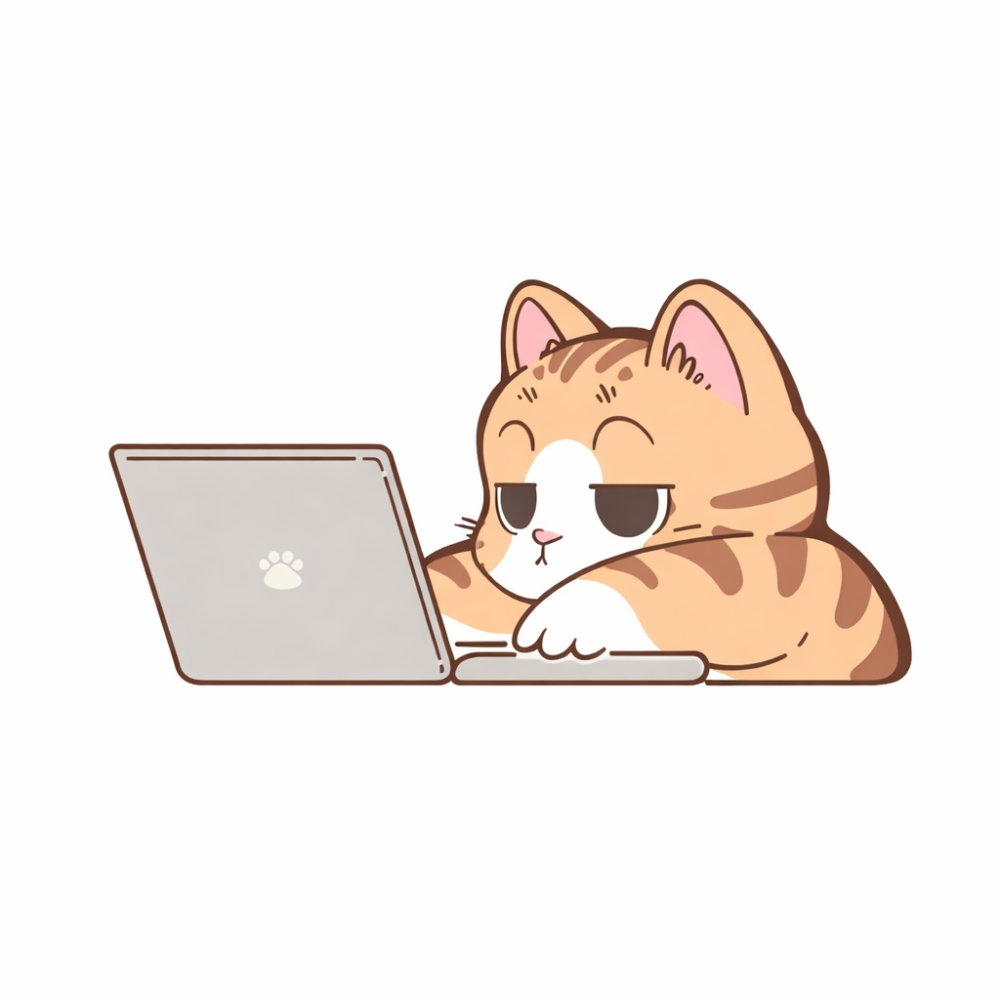

Proyecto Herramientas python
Este proyecto consiste en un programa de consola desarrollado en Python 🐍 que permite gestionar el préstamo de herramientas entre vecinos de una comunidad. Surge como solución a la falta de control en el uso compartido de herramientas, donde frecuentemente se pierde información sobre disponibilidad, estado o quién tiene cada herramienta.
Objetivos
Organizar el préstamo de herramientas dentro de la comunidad 🛠️ Llevar un registro claro de usuarios y herramientas 👥 Controlar la disponibilidad y estado de cada herramienta 📊 Evitar pérdidas o retrasos en devoluciones ⏳ Facilitar la consulta de información mediante un sistema accesible ✨

Funcionamiento
El sistema permite: Registrar, actualizar, buscar y eliminar herramientas y usuarios Gestionar préstamos, verificando la disponibilidad antes de realizarlos Actualizar el estado de los préstamos y restaurar el stock al devolver herramientas Generar reportes como herramientas más usadas o préstamos activos Registrar eventos importantes en archivos de texto (logs) 📝 Además, cuenta con dos roles: 👑 Administrador: gestiona usuarios y herramientas 🌷 Usuario: consulta información y solicita herramientas
Resultados
Se obtuvo un sistema funcional que mejora la organización en el préstamo de herramientas, permitiendo un control más eficiente y evitando pérdidas de información. El proyecto también permitió fortalecer habilidades en programación con Python, manejo de datos, lógica de desarrollo y estructuración de sistemas reales 💻✨